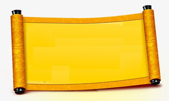

今天，北京是一座缺水的城市，但在古代，北京可是一座水患
 频发的城市，老百姓吃过无数次水患的苦，于是老百姓便把北京水患具象化成了一只恶龙
，所有的水患都是恶龙作恶才有的。因此，北京的神话建城史就成了一部勇斗恶龙的历史。
频发的城市，老百姓吃过无数次水患的苦，于是老百姓便把北京水患具象化成了一只恶龙
，所有的水患都是恶龙作恶才有的。因此，北京的神话建城史就成了一部勇斗恶龙的历史。
相传，朱棣当了皇帝之后，要在北京地界儿修建京城，就派工部去办这件事。但是，工部大臣说北京城中恶龙肆掠，到处都是水 ，被老百姓称为“苦海幽州”。
恶龙非常厉害，老百姓们没办法，只好住在西面和北面的山 上，把这片苦海让给了龙王。因此，在北京修建城池必须先降服了恶龙才能建造。朱棣是皇帝，自然不会自己去和恶龙打架 ，于是问大臣们，谁能降服恶龙。军师刘伯温看没有人敢领这件差事，就说自己去。这时，一直和刘伯温暗中斗劲的姚广孝怕刘伯温抢了功劳，也说自己要去。皇帝非常高兴，就让两个人一起 去找降服恶龙的办法。
刘伯温与姚广孝到了北京之后各自去查看北京地形，思索怎样建城才能镇压恶龙。刘伯温心想画建城图纸 可是一份大功，不想让姚广孝分了自己的功劳，而姚广孝有同样的想法。于是，二人约定各想各的图纸，七天以后两人再背对背 坐着，当场各画各的，看谁画的图纸能降服恶龙。
二人在 中不约而同地听到“照着我画，照着我画”的童稚声音。很快就到了约定的最后一天，但两人依然画不出建城图纸。刘伯温一边走，一边还在想图纸的事。突然间，他发现一个穿着一身红的小孩 在他前面走着。开始刘伯温也没有在意，后来他发现他走得快，小孩也走得快，他走得慢，小孩也走得慢。刘伯温想追上小孩，就跑 起来。谁知，跑着跑着小孩不见了，对面的姚广孝向自己跑来，两人相遇的地方正好是约好画图纸的地方。二人都说自己是追一个红衣服的小孩才来到这里的，才明白两人都遇到了神仙 。
于是，两个人就背对背地坐在地上，拿出纸  铺在地上就开始画了。这时，那个红衣小孩又出现了，二人才看清小孩的体貌特征。小孩头上梳着小抓揪，半截腿露着，光着脚丫，穿的还是红袄红裤子和一件荷叶 边的披肩，肩膀两旁有浮镶着的软绸子边，风一吹真像是几条臂膀似的。
两个人一想，这不是八臂哪吒么？原来能降服恶龙的神仙正是哪吒。两个人都非常高兴，可谁也不吐露这个秘密，都各自照哪吒画了起来。
画完了，两个人手递手交换 了图样。姚广孝拿起大军师的城图，刘伯温拿起姚广孝的城图，两个人一看，同时笑了起来。原来，两张图一模一样，都是八臂哪吒城。虽然两人画的都一样，但是以谁的图纸 为准呢？两人争来争去也争不出结果，还是皇帝聪明，拿着二人的图纸就说东城按刘伯温的图纸修，西城照姚广孝的图纸建。但是，姚广孝不愿和刘伯温同修北京城，就上山当和尚 去了。于是，刘伯温就按照八臂哪吒的样子开始修建北京城。